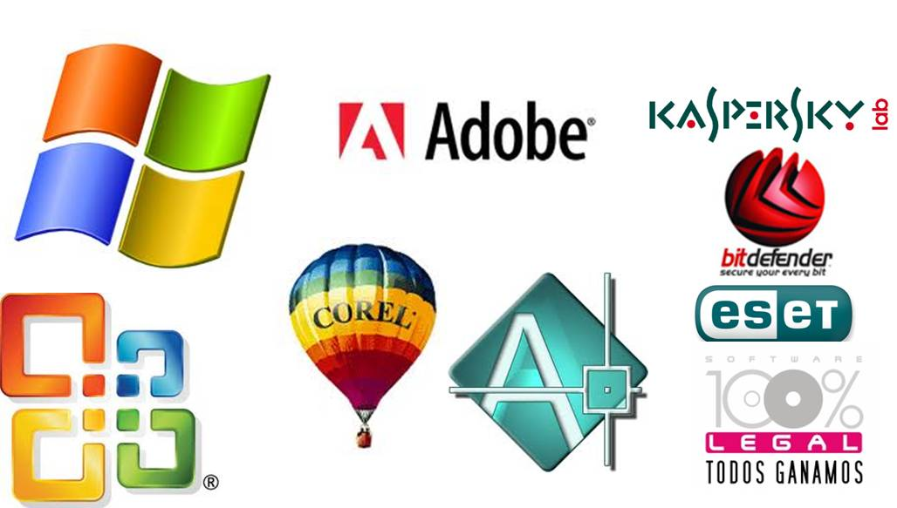

TIPO DE SOFTWARE |
||
Software libre | Software propietario |
|
| El software libre es una cuestió de libertad,no de precio.Para comprender este concepto,debemos pensar en la acepción de libre como libre de expresion y no como barra libre de cerveza - Richard Stallman | El software privativo es que el código fuente no está disponible impidiendo que los usarios puedan ejecutarlo,estudiarlo, modificarlo y copiarlo | |
BENEFICIOS: | BENEFICIOS |
|
|  | ||
Regresar |